Activity: Creating chamfer features
This activity demonstrates the process of creating a chamfer feature.
Learn how to use the two commands to create chamfer features. One command creates a chamfer feature which only creates faces to define the chamfer. The chamfer definition does not maintain during model edits. The other command creates a procedural chamfer feature, which can be edited, and maintains the chamfer definition during a model edit.
Click here to download the activity file.
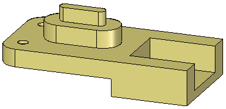
-
Open the part file chamfer.par.
On the Solids group, in the Round list, choose the Chamfer Unequal Setbacks command .
On command bar, click the Options button.
The default setting is Angle and setback. Use this option. Click OK.
Select the three faces shown and click the Accept button on the command bar.
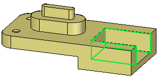
On command bar, type 8 in the Setback field and press Tab. Type 15 in the Angle field. Select the three edges shown.
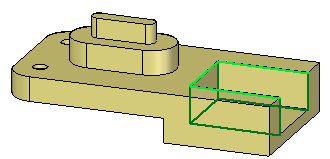
Click the Accept button. The chamfer feature (shown in orange for clarity) places but the command is still active. Do not click Finish.
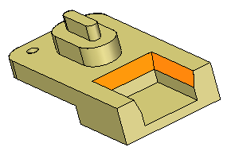
The setback distance 8 is measured off the edge selected. The angle 15° is measured from the setback distance inward to the selected face.
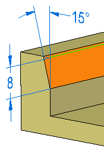
Once you click the Finish button, no changes can be made to the chamfer feature. Change the setback angle. On command bar, click the Select Edge step .
Change the angle to 30 and click the Accept button. Click Finish to end the command.
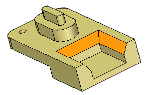
If you select one of the chamfer faces for a model edit, it does not know about the other chamfer faces. It uses the Design Intent settings to preserve the relationships.
In PathFinder, delete the chamfer feature placed in the previous step.
Choose the Chamfer Unequal Setbacks command.
On command bar, click the Options button. Click the 2 Setbacks option and click OK.
Select the same three faces and three edges as in the previous step. Type 12 for the first setback and 5 for the second setback.
Setback 1 is measured from the selected edge on the selected face. Setback 2 is measured from the selected edge normal to the selected face.
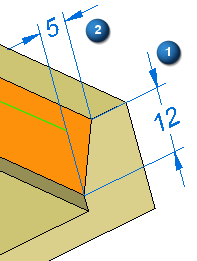
Click Accept and then click Finish.
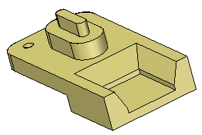
Choose the Chamfer Equal Setbacks command .
Select the edge shown.
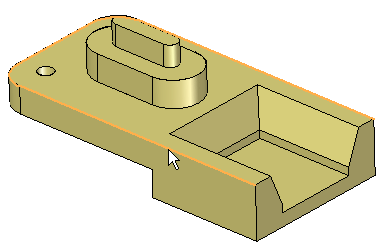
In the dynamic edit box, type 3 and press Enter.
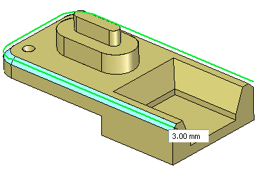
Edit the chamfer feature by either selecting a chamfer face or by selecting the chamfer feature in PathFinder. Select a face on the chamfer.
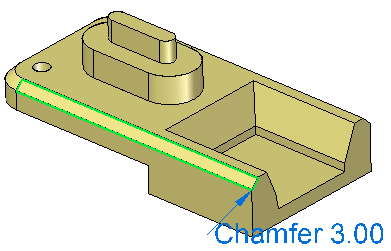
Notice the chamfer edit handle text. Click the text to make an edit. Type 4 in the dynamic edit box; select the Selected Faces Only option on the box.
Only the selected chamfer face is edited. The remainder of faces on the chamfer feature maintain their original value.
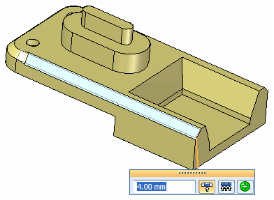
Choose the Undo command to return to the original value.
To change the setback value of all the faces in the chamfer feature, select the chamfer feature in PathFinder, choose the All Feature Faces option.
Change the value to 4. Exit the command.
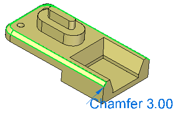
-
Select a face shown and move the face to observe how the chamfer feature stays attached. Do not make any changes. Right-click or press Escape to return without any changes.
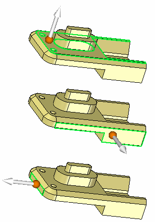
Choose the Chamfer Equal Setbacks command.
Use the Chain option and select the three edge chains as shown and type 2 in the dynamic edit box. End the command.
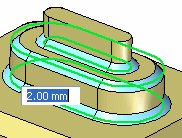
Observe how the chamfers stay attached as the face they are connected to moves. Select the face shown and move above and below original position. Do not make any changes.
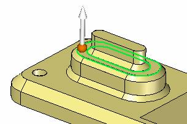
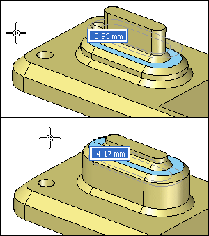
This completes the activity. Close the file and do not save.
In this activity you learned how to create two types of chamfer features. One type maintains its chamfer definition during a model edit and the other does not. Once you understand the behavior of the Chamfer command, you will be able to apply any type of chamfer required in the design a model.
-
Click the Close button in the upper-right corner of this activity window.